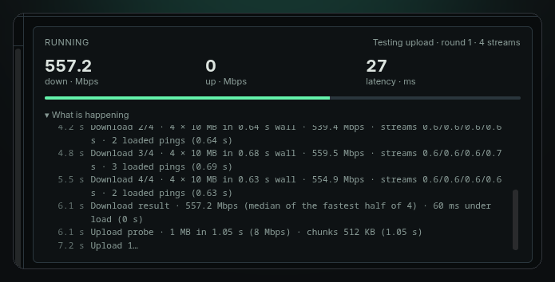
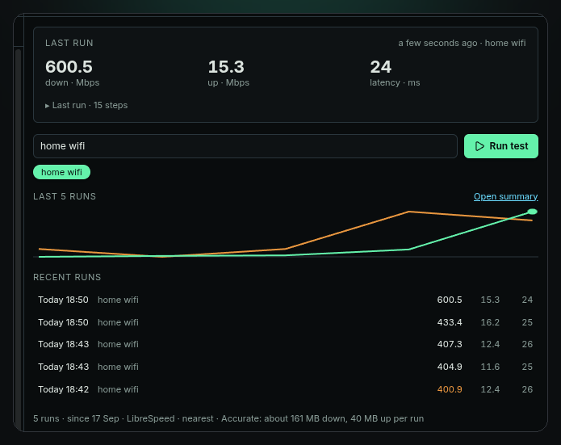
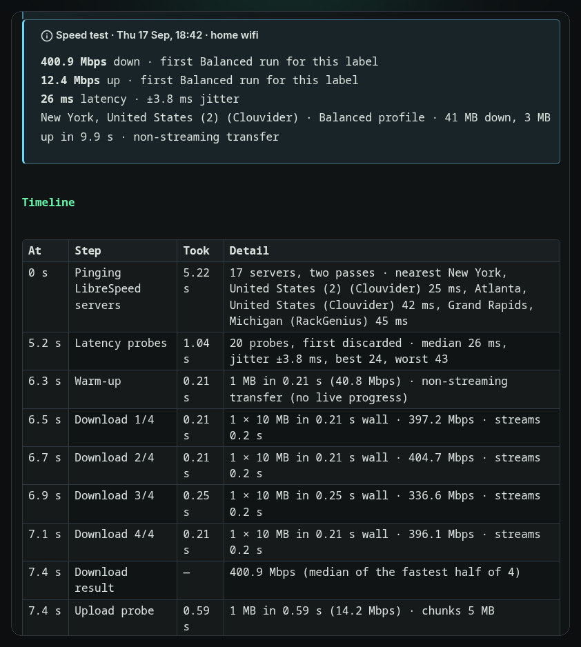
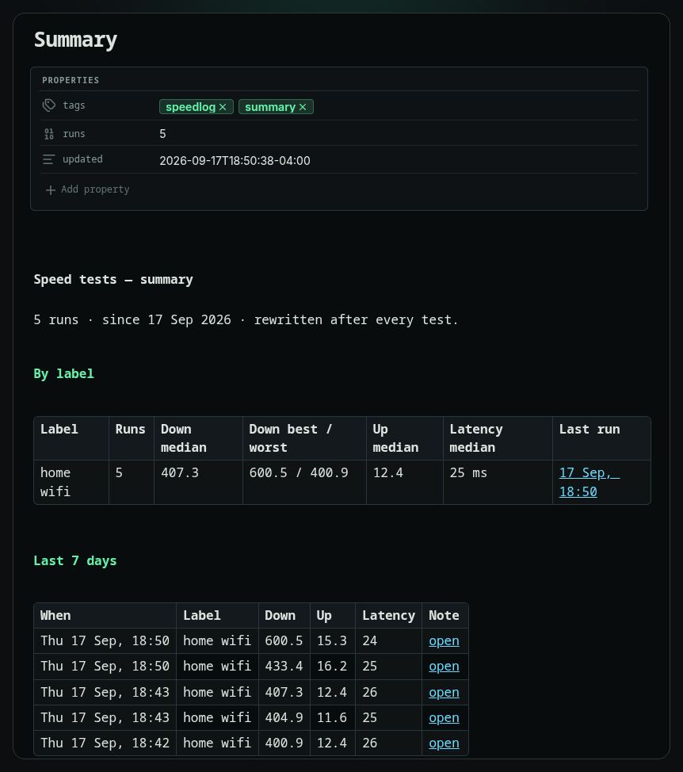

Run a speed test. Keep the log.
Speedlog measures download, upload, latency and jitter from inside Obsidian and writes every run to your vault as a note with front matter. Label your networks, compare against their medians, chart the history with Bases or Dataview.

A speed test that remembers
A one-off test is a browser tab. A log tells you which network was slow, when it started, and whether the new router helped.
Four numbers, measured properly
Up to 30 latency probes, a warm-up, then sized downloads and uploads over four parallel streams. Results are the median of the fastest half. Latency is probed again while the link is saturated.
One note per run
Front matter with download_mbps, upload_mbps, latency_ms, jitter_ms, loaded_latency_ms, server, label and phase timings. A callout shows the numbers and how they compare to that network's median.
Every step, timed
The panel logs each step as it happens — server pick, latency, every round with size, time and rate. The note keeps the same as a Timeline table.
Labels
"home wifi", "office", "phone hotspot" — type it once, pick it from a chip next time. Medians, best and worst are tracked per label so a hotspot doesn't drag down your fibre.
Summary that rewrites itself
Summary.md holds every label's numbers, failed runs with their reason, and the last 7 days, with links to each note. Updated after every test.
Scheduled, if you want
Run on startup once a day, or every N minutes. Both off by default, and skipped on phones and tablets unless you say otherwise. Cancel any run with one click.
How a run works
About twelve seconds on a fast link. This is a real log from the panel.
2.5 sLatency probes · 30 probes, first discarded · median 27 ms, jitter ±2.6 ms, best 24, worst 33 (0.89 s)
3.4 sWarm-up · 1 MB in 0.07 s (118.7 Mbps) · non-streaming transfer (0.07 s)
3.5 sDownload 1/4 · 4 × 10 MB in 0.73 s wall · streams 0.7/0.6/0.7/0.6 s · 3 loaded pings (0.73 s)
4.2 sDownload 2/4 · 4 × 10 MB in 0.64 s wall · 539.4 Mbps · streams 0.6/0.6/0.6/0.6 s (0.64 s)
4.8 sDownload 3/4 · 4 × 10 MB in 0.68 s wall · 559.5 Mbps · streams 0.6/0.6/0.6/0.7 s (0.69 s)
5.5 sDownload 4/4 · 4 × 10 MB in 0.63 s wall · 554.9 Mbps · streams 0.6/0.6/0.6/0.6 s (0.63 s)
6.1 sDownload result · 557.2 Mbps (median of the fastest half of 4) · 60 ms under load
6.1 sUpload probe · 1 MB in 1.05 s (8 Mbps) · chunks 512 KB (1.05 s)
7.2 sUpload 1 · 4 × 512 KB in 1.17 s · 14.3 Mbps (1.18 s)
8.4 sUpload 2 · 4 × 512 KB in 1.12 s · 15 Mbps (1.12 s)
9.5 sUpload 3 · 4 × 512 KB in 1.05 s · 15.9 Mbps (1.06 s)
10.6 sUpload 4 · 4 × 512 KB in 1.08 s · 15.4 Mbps (1.08 s)
11.7 sUpload result · 15.4 Mbps (median of the fastest half of 4)
11.7 sWriting run note · Saved 2026-09-17 185103 · Summary updated
Nearest by ping
Every LibreSpeed server is pinged in two passes; the quickest three are kept. If one refuses the test, the next is tried. Or pin a server, or use Cloudflare.
Median and jitter
Up to 30 small requests, first one discarded. Median is the latency; the mean gap between probes is the jitter.
Four rounds, four streams
Each round reports its rate; the result is the median of the fastest half. Latency is probed during the transfer for the under-load figure.
Sized to your uplink
A 1 MB probe picks the chunk size, then rounds run until a time budget is spent. Servers with small body limits are handled automatically.
Front matter and timeline
The run note is written with the numbers, the comparison to your median, a timeline of every step, and the previous runs on that network.
Rebuilt every run
Summary.md is rewritten with per-label medians, failed runs, and the last 7 days.
The panel, the notes, the settings
Shot under the Terminal Workbench theme; the panel takes its colours from whatever theme you run.




Install in a minute
Three files and a toggle. No build step, no account. Desktop and mobile.
- Download
main.js,styles.cssandmanifest.jsonfrom the latest release. - Copy them into
.obsidian/plugins/speedlog/inside your vault. - Enable Speedlog under Settings → Community plugins, then click the gauge in the ribbon.
speed.cloudflare.com. Accurate, the default, moves about 160 MB down and 10–40 MB up; Balanced about 60 MB; Light about 7 MB. Nothing about you or your vault is sent.Each run is one Markdown file:
---
download_mbps: 557.2
upload_mbps: 15.4
latency_ms: 27
jitter_ms: 2.6
loaded_latency_ms: 60
profile: accurate
label: "home wifi"
server: "New York, United States (2) (Clouvider)"
server_host: "nyc.speedtest.clouvider.net"
server_picked: auto
platform: "desktop · linux"
trigger: manual
duration_s: 12.1
pick_s: 2.5
latency_s: 0.9
download_s: 3.4
upload_s: 5.1
date: 2026-09-17T18:51:03-04:00
tags: [speedlog]
---
> [!info] Speed test · Thu 17 Sep, 18:51 · home wifi
> **557.2 Mbps** down · ▲ 8% vs median
> **15.4 Mbps** up · ▲ 3% vs median
> **27 ms** latency · ±2.6 ms jitter · 60 ms under load
## Timeline
…Settings and commands
Grouped under Test, When to run and Notes.
| Setting | What it does |
|---|---|
| Profile | Accurate (default: four streams, latency under load, about 160 MB), Balanced (single stream, about 60 MB), Light (one 5 MB transfer, for metered links). |
| Server | The nearest LibreSpeed server (default, picked each run), one of 17 LibreSpeed servers by city, or Cloudflare's nearest edge. |
| Time cap | A run stops after this many seconds and reports what it has. |
| Run on startup | One test 30 s after the vault opens, at most once a day. Off by default. |
| Repeat every | Never, or 30 minutes to 24 hours. Off by default. |
| Allow scheduled runs on mobile | Off: startup and interval runs skip phones and tablets. Manual runs always work. |
| Folder, filename format | Where run notes go and how they are named. Default Speed tests/, YYYY-MM-DD HHmmss. |
| Keep Summary.md updated | Rewrite the summary note after every run. |
| Status bar | Show the last result; click it to run again. |
| Command | What it does |
|---|---|
| Run speed test | Runs a test with the current label and writes the note. |
| Open panel | Opens the Speedlog sidebar. |
| Open summary note | Rebuilds and opens Summary.md. |
More from Real-Fruit-Snacks
Same site, a different glow per project.